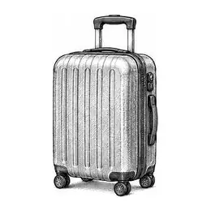
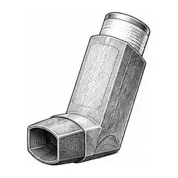
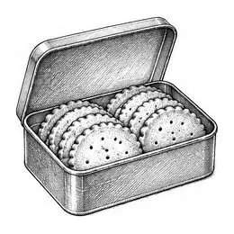
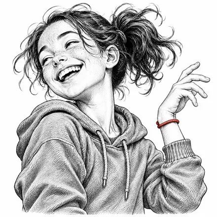
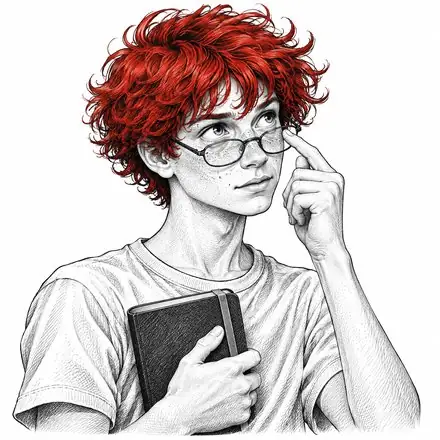

Giochi
La sera prima di partire
In casa Bertolin la partenza è già un’avventura: la lista della mamma, il pouff che non si trova, i biscotti che spariscono. Sei giochi da fare con il dito, senza installare niente.

Quattro valigie e mezza
La lista della mamma
Riempi le valigie seguendo la lista. Attento a quello che gli altri provano a infilarci.

Dov’è finito il pouff?
Cerca e trova
La casa è sottosopra e mancano otto cose. Trovale nella tavola a china.

Chi ha finito i biscotti?
Un giallo in cucina
La scatola è vuota. Ognuno ha visto una cosa sola: mettile insieme.
Due secondi
Lo sguardo della mamma
Guarda la stanza, poi di’ che cosa manca. Otto stanze, sempre più piene.

Il passo di Emma
A ritmo
Emma fa una sequenza di passi. Tu la rifai uguale, ogni volta più lunga.

Che Bertolin sei?
Sette domande
Chi conta, chi guarda i vestiti, chi sente il ritmo: scopri a chi somigli.